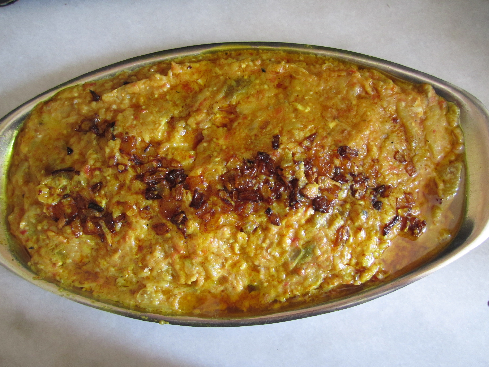

Home
Mirza Ghasemi

Description
Mirza Ghasemi is a dish originated in north of Iran. It can be served as starter or main course.
This dish is suitabel for vegetarians and possibly for vegans if eggs are eliminated from recipe.
Ingredients
- 1 aubergine
- half a table spoon tomato pure
- 2 garlic cloves
- a table spoon of oil
- 1 egg
- Quarter of a tea spoon turmeric ground
- salt and black pepper
Steps
- Barbeque your aubergine over fire or in oven until is soft and then peel off the skin.
- Mince the peeled aubergine using a knife to small pieces.
- Chop garligs and add them to pan with oil and turmeric ground.
- fry garlics until golden and then add tomato pure to the pan.
- When oil changed colour and tomato pure half fried, add minced aubergine with salt and pepper and fry for 5 minutes.
- Break the egg on top of everything in the pan, put on the lid and let it cook on low-medium heat for 10 to 15 minutes.
- Serve in a plate with bread or rice.